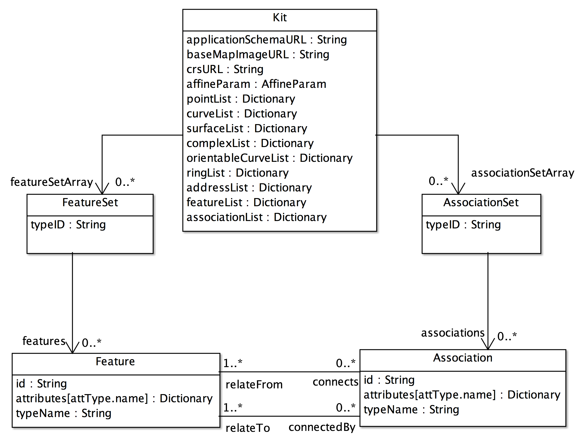
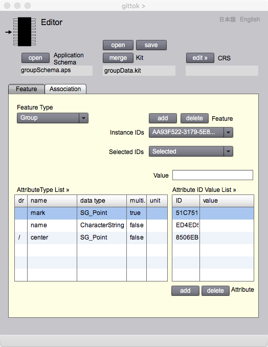
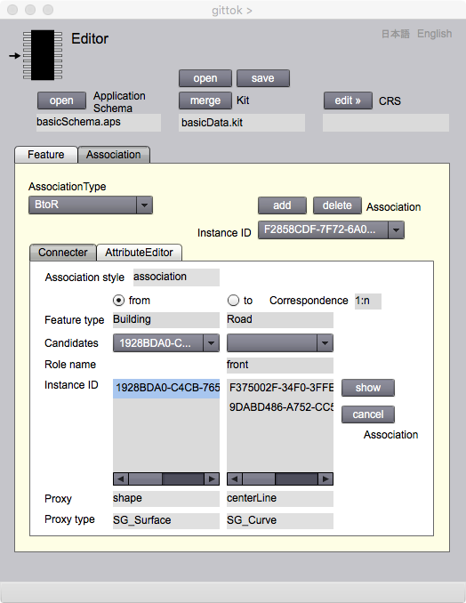

<!DOCTYPE html PUBLIC "-//W3C//DTD XHTML 1.0 Transitional//EN" "http://www.w3.org/TR/xhtml1/DTD/xhtml1-transitional.dtd">
<html xmlns="http://www.w3.org/1999/xhtml">
<head>
<meta http-equiv="Content-Type" content="text/html; charset=UTF-8" />
<title>Acquisition Manager</title>
<link href="gittokCSS.css" rel="stylesheet" type="text/css" />
<script language="JavaScript">
window.resizeTo(600,700);
window.moveTo(750,20);
</script>
</head>

<body>
<p class="FirstHeader">Editor<br/>
</p>
<p class="secondHeader">Introduction</p>
<p class="mainSentence">Eitor page allows the acquisition of geospatial data as instances of feature or association types in accordance with the application schema that you designed. You can save geospatial dataset called &quot;kit&quot; as a result of acquisition. This section explains instance model that is a rule how to describe a kit as a set of instances. Then,  the procedure of data acquisition is introduced. Finally, how to use Editor page is explained.</p>
<p class="secondHeader">Instance Model</p>
<p class="mainSentence"><span class="thirdHeader">What is instance model?</span><br />
Instance is an object acquired in accordance with the application schema.  Geospatial dataset is a set of instances and related information. It is called &quot;kit&quot; in gittok.General Feature model specifies how to describe an application schema. Apprication schema specifies how to describe feature and association instances.  Instance model specifies the structure of the kit. </p>
<p></p>
<p class="mainSentence"><strong>Figure 1.</strong> Instance Model and kit</p>
<p class="mainSentence">Instance model is defined as the UML class diagram shown below (See Figure 2). Instance model is a general-purpose schema for the implementation of geospatial data in accordance with an application schema. Types and associations in the instance model are explained below.</p>
<p class="mainSentence"></p>
<p class="mainSentence"><strong>Figure 2</strong>. Instance Model used in gittok.</p>
<p class="secondHeader">Kit</p>
<p class="thirdHeader">Introduction</p>
<p class="mainSentence">Kit is a geospatial dataset which includes a set of instances and related information. Kit is constructed in compliance with the application schema. A kit includes a set of feature instances (FeatureSet) following one feature type and a set of association instances (AssociationSet) following one association type. Usually application schema may includes more than one feature types and more than one association types. An array of feature sets is called featureSetArray, and an array of association sets is called associationSetArray. Both arrays are parts of a kit. For example, if an application schema includes feature types such as Building, Road and Bridge, and association types such as BuildingToRoad and RoadToBridge, then there are three feature sets included in the feature set array and two association sets included in the association set array.  In Instance Model, Kit associates with featureSetArray: an array of FeatureSet, and Kit associates with assciationSetArray: an array of AssociationSet (Figure 2).</p>
<p class="thirdHeader">attributes</p>
<p class="mainSentence"><strong>applicationSchemaURL</strong><br />
  Kit has URL of application schema to show where it is stored.</p>
<p class="mainSentence"><strong>baseMapImageURL</strong><br />
  Gittok uses a base map image to digitize geometries and attributes. This URL is the location of the base map.</p>
<p class="mainSentence"><strong>affineParam</strong><br />
  Geometric attributes are digitized on the map displayed on the screen. Therefore, the transformation between map coordinates and plane rectangular coordinates on the ground is required.  Gittok uses affine transformation for this purpose. AffineParam includes parameters and accuracyinformation for the transformation. The text in CRS Editor will explain about coordinate transformation in detail.</p>
<p class="mainSentence"><strong>crsURL</strong><br />
  The coordinate reference system is required for the conversion between plane coordinates and geodetical coordinates (latitude and longitude). CrsURL is the location of the data file for the definition of the coordinate reference system using Gauss-Kruger projection. The text in CRS Editor will explain about this issue in detail.</p>
<p class="mainSentence"><strong>pointList</strong><br />
  This is a list of points which data type is SG_Point.  The data type of the list is &quot;Dictionary&quot;. Dictionary is a collection data type to describe associative array of which index can be not only integer but other data types.  In case of pointList., index is id of the point. </p>
<p class="mainSentence"><strong>curveList</strong><br />
  This is a list of curves which data type is SG_Curve. This is a dictionary of curves.</p>
<p class="mainSentence"><strong>surfaceList</strong><br />
  This is a list of curves which data type is SG_Surface. This is a dictionary of surfaces.</p>
<p class="mainSentence"><strong>complexList</strong><br />
  This is a list of complexes which data type is SG_Complex. This is a dictionary of complexes.</p>
<p class="mainSentence"><strong>orientableCurveList</strong><br />
  This is a list of orientable curves which data type is SG_OrientableCurve. This is a dictionary of orientable curves. SG_Orientable curve is a cild type of SG_Curve. It has an orientation as unique attribute. Orientation is a direction of curve. Orientable curve is also called a half edge. in Topology. If a value of orientation is true, there is a surface at left hand side. While, if a value of orientation is false, then there is a surface at the right hand side.</p>
<p class="mainSentence"><strong>ringList</strong><br />
  This is a list of rings which data type is SG_Ring. This is a dictionary of rings. Ring is a sequence of orientable curves to represent a boundary of a surface. </p>
<p class="mainSentence"><strong>addressList</strong><br />
  This is a list of addresses which data type is Address. Address is a type of address in the real world such as postal address. This is a dictionary of addresses. </p>
<p class="mainSentence"><strong>featureList</strong><br />
  This is a list of feature instances which data type is Feature. This is a dictionary of features.<br />
  Its index is a feature id. Each feature attribute has the feature id to show which feature is the owner of the attribute. This structure is used to get feature instance from the attribute. For example, it is possible to get feature instance by clicking geometry on the panel of Geometry page. </p>
<p class="mainSentence"><strong>associationList</strong><br />
  This is a list of association instances which data type is Association. This is a dictionary of association. Each association attribute has the association id to show which association is the owner of the attribute. This structure is used to get association instance from the attribute.<span class="thirdHeader"></span></p>
<p class="thirdHeader">Associations</p>
<p class="mainSentence"><strong>featureSetArray</strong><br />
  This is a roll name of the dictionary of feature sets. Feature set is a set of feature instances following the same feature type. Its index is feature type id.</p>
<p class="mainSentence"><strong>associationSetArray</strong><br />
  This is a roll name of the dictionary of association sets. Association set is a set of association instances following the same association type. Its index is association type id.</p>
<p class="secondHeader">FeatureSet</p>
<p class="mainSentence">Feature set is a set of feature instances following the same feature type. The data type is FeatureSet and this type has an attribute and an association described below.</p>
<p class="thirdHeader">Attributes</p>
<p class="mainSentence"><strong>typeID</strong><br />
  This is an index of the feature type.</p>
<p class="thirdHeader">Associations</p>
<p class="mainSentence"><strong>features</strong><br />
  This is a set of feature instances which data type is Feature.</p>
<p class="mainSentence"><span class="secondHeader">AssociationSet</span><br />
  </p>
<p class="mainSentence">Association set is a set of association instances following the same association type. The data type is associationSet and this type has an attribute and an association described below.</p>
<p class="thirdHeader">Attributes</p>
<p class="mainSentence"><strong>typeID</strong><br />
  This is an index of the association type.</p>
<p class="thirdHeader">Associations</p>
<p class="mainSentence"><strong>associations</strong><br />
  This is a set of association instances which data type is Association.</p>
<p class="secondHeader">Feature</p>
<p class="mainSentence">Feature is a data type of feature instances. Feature refers to its feature type.</p>
<p class="thirdHeader">Attributes</p>
<p class="mainSentence"><strong>id</strong><br />
  This is an id of feature instance.</p>
<p class="mainSentence"><strong>attributes</strong><br />
  This is a dictionary of attribute values. Its index is a name of the attribute type.</p>
<p class="thirdHeader">Associations</p>
<p class="mainSentence"><strong>connects</strong><br />
  A feature instance may connect to more than one associations as a realization of  &quot;links&quot; defined in GFM.</p>
<p class="mainSentence"><strong>connectedBy</strong><br />
  Feature instance may be connected by an association as a realization of &quot;linkedBy&quot; defined in GFM.</p>
<p class="secondHeader">Association</p>
<p class="mainSentence">Association is a data type of association instance. Association refers to its association type.  Association is a realization of 1:1, 1:n, m:1 and m:n associations between features following different feature types.</p>
<p class="thirdHeader">Attributes</p>
<p class="mainSentence"><strong>id</strong><br />
  This is an id of association instance.</p>
<p class="mainSentence"><strong>attributes</strong><br />
  This is a dictionary of attribute values. Its index is a name of the attribute type.</p>
<p class="thirdHeader">Associations</p>
<p class="mainSentence"><strong>relateFrom</strong><br />
  An association instance may be related from more than one features.</p>
<p class="mainSentence"><strong>relateTo</strong><br />
  An association instance may relate to more than one features.</p>
<p class="secondHeader">Data acquisition</p>
<p class="thirdHeader">What is data acquisition?</p>
<p class="mainSentence">Data acquisition in gittok is to create geospatial data set called &quot;kit&quot;. Kit includes a set of feature and association instances and related information. <br />
  For example, Imagine a feature type &quot;Building&quot; has name, ownership, intended use, address and shape as its attributes. Name and address can be obtained  by field survey. Ownership and intended use may be known by asking appropriate section in the local government, if the data is created for official public purpose. Shape can be obtained by map digitizing or by photogrammetry. These data are integrated to feature instances and association instances. All these activities are called data acquisition.</p>
<p class="thirdHeader">Possible data acquisition in gittok</p>
<p class="mainSentence">Data is acquired by using the following pages in gittok.</p>
<p class="mainSentence"><strong>Editor</strong><br />
  Main page for data acquisition. It is used to edit, store, update and delete features and associations.</p>
<p class="mainSentence"><strong>Geometry</strong><br />
  Page for map digitizing to get and edit geometric attributes.</p>
<p class="mainSentence"><strong>Image</strong><br />
  Page to add and delete URL of image attributes.</p>
<p class="mainSentence"><strong>Sound</strong><br />
  Page to add and delete URL of sound attributes.</p>
<p class="mainSentence"><strong>Video</strong><br />
  Page to add and delete URL of video attributes.</p>
<p class="mainSentence"><strong>Url</strong><br />
  Page to add and delete URL of web sites as attributes.</p>
<p class="mainSentence"><strong>Address</strong><br />
  Page to add, edit, update and delete postal address as attributes of a feature.</p>
<p class="mainSentence"><span class="thirdHeader">Acquisition of feature instances</span><br />
</p>
<p class="mainSentence">The following procedure is the acquisition of complex attributes. The acquisition of simple attributes is explained at the next section.<br />
  1. Open Editor page by clicking acquisition icon on the title page of gittok.<br />
  2. Open an application schema created at Modeler page.<br />
  3. Select a feature type from FeatureType drop down list after clicking Feature tab. By selection, the list of attribute name, data type and multiplicity of feature attributes is displayed in Attribute Type List.<br />
  4. Add the empty feature instance by clicking add button located near at the label &quot;Instance ID&quot;. New instance id is shown on the drop down list &quot;Instance ID&quot;.<br />
  5. Open an attribute editing page for appropriate data type by clicking the attribute type listed on Attribute Type List. <br />
6. Acquire, digitize and edit attributes on the page. </p>
<p class="thirdHeader">Acquisition of feature attributes</p>
<p class="mainSentence"><strong>Attributes of simple data type</strong><br />
  1. Key in an attribute value in &quot;Value&quot; text input box.<br />
  2. The attribute value is displayed in &quot;value&quot; field in Value Grid.<br />
  3. If multiplicity is true, repeat 1 and 2 until all values are added.<br />
  Click delete button after the selection of appropriate value, if it is un-necessary.</p>
<p class="mainSentence"><strong>Attributes of complex data type</strong><br />
  1. Add attribute values on the editing page such as Spatial, Place, Address and Memo.<br />
  2. Select appropriate attribute value on the editing page.<br />
  3. The attribute id is displayed in &quot;id&quot; field in Value Grid by clicking add button located at lower right of Editor page.<br />
  4. If multiplicity is true, repeat 2 and 3 until all values are added.<br />
  Click delete button after the selection of appropriate id, if it is un-necessary. Remember the attribute value on the editing page is not deleted. If it is not needed, Attribute value shall be deleted on the editing page.</p>
<p class="thirdHeader">Acquisition of association instances</p>
<p class="mainSentence">Association instances are acquired after the acquisition of feature instances. The procedure of the acquisition of association instances is as follows.<br />
  1. Open Editor page by clicking acquisition icon on the title page of gittok.<br />
  2. Open the kit that is already the feature instances are stored.<br />
  3. Select the association type from AssociationType dropdown list after clicking Association tab. Then association from which feature type to which feature type is shown on the panel of connector tab.<br />
  4. Add new association instance by clicking &quot;add&quot; button.<br />
  5. Open proxy attribute editing page by clicking &quot;from&quot; radio button. For example, if the proxy of the from-feature type is geometry, then Geometry page appears.<br />
  6. Select all features by clicking proxy attributes on the attribute editing page. Instance ids are displayed respectively at Instance ID list on Editor page.<br />
  7. Open proxy attribute editing page by clicking &quot;to&quot; radio button. Then select all features by clicking proxy attributes on the attribute editing page.</p>
<p class="mainSentence">Association between &quot;from&quot; to &quot;to&quot; features are confirmed by clicking &quot;show&quot; button on Editor page. For example, Blue and red triangles are shown on Geometry page. Blue means &quot;from&quot;, while red means &quot;to&quot;. After clicking &quot;show&quot; button, the label changes to &quot;clear&quot;. And triangles are eliminated by clicking&quot;clear&quot; button.  &quot;Clear&quot; is replaced be &quot;show&quot; again. If the proxy of from or to features is character string, then List page appears to show the proxy of feature.</p>
<p class="thirdHeader">Acquisiton of association attributes</p>
<p class="mainSentence">As long as association is a phenomenon in the real world, association is a feature. However in gittok, association is independent from feature. Association has attributes and operations but it does not have inheritance relationship to make the structure of application schema simple. The following procedure is the association attribute acquisition.</p>
<p class="mainSentence">1. The list of attribute types is shown by selecting &quot;attributeEditor&quot; tab. <br />
  2. Select appropriate attribute in the list.<br />
  3. Get attribute values as same as the procedure of feature attribute acquisition.</p>
<p class="thirdHeader">Save and open of  kit files</p>
<p class="mainSentence">Feature and association instances are disappeared after closing gittok. Kit should be saved to avoid such a situation. Kit is stored in the computer by clicking &quot;save&quot; button in Editor page. Save a file after input or selecting the folder and the name of the kit.<br />
Input a kit file in gittok by clicking &quot;open&quot; button in Editor page. The name of the kit is shown in the label under &quot;open &quot; and &quot;save&quot; button. </p>
<p class="mainSentence"><span class="thirdHeader">Merge</span><br />
</p>
<p class="mainSentence">Kit file can be merged when more than one people collaborate for data acquisition. But gittok does not check the duplicate input of instances today. Therefore be careful so as not to happen the duplication. Kit file is merged by clicking &quot;merge&quot; button and selecting the kit for merge.</p>
<p class="secondHeader">Parameters of Coordinate Reference System</p>
<p class="mainSentence">Coordinates included in spatial attribute is map coordinates digitized on Geometry page. These coordinates are converted to ground coordinates (plane rectangular coordinates) by Affine transformation. Then, conversion between ground coordinates and geodetic coordinates (longitude, latiiude) is performed by Gauss-Kruger projection. To execute this conversion, geodetic datum and the definition of coordinate system are required. Gittok prepares CRS (Coordinate Reference System) editor in Editor page. Click edit CRS button to open CRS editor and read the tutorial written about CRS in detail.</p>
<p class="secondHeader">Editor</p>
<p class="thirdHeader">FIELDS</p>
<p class="mainSentence"><strong>Application Schema</strong><br />
  Click open button to open the application schema for digitize a kit. Then the name of the schema is shown in this field.</p>
<p class="mainSentence"><strong>kit</strong><br />
  Kit is a data file including digitized feature and association instances. The name of the kit is shown in this field.</p>
<p class="mainSentence"><strong>CRS</strong><br />
  CRS is Coordinate Reference System. It is used to convert between local cartesian ground coordinates and geodetic coordinates. The name of CRS is shown in this field.</p>
<p class="thirdHeader">BUTTONS</p>
<p class="mainSentence"><strong>open (Application Schema)</strong><br />
  Click this button to open an application schema.</p>
<p class="mainSentence"><strong>open (kit)</strong><br />
  Click this button to open kit file.</p>
<p class="mainSentence"><strong>save (kit)</strong><br />
  Click this button to save kit file.</p>
<p class="mainSentence"><strong>edit (CRS)</strong><br />
  CRS editing page opens by clicking this button.</p>
<p class="mainSentence"><strong>get (CRS)</strong><br />
  Get and store the file name of CRS parameters from CRS editing page in the kit.</p>
<p class="thirdHeader">Feature Tab</p>
<p class="mainSentence">The panel for editing feature instance  appears by clicking &quot;Feature&quot; tab. This enables creation, updating, and deletion of feature instances. Attributes of feature instance are created and edited by using editing pages provided for each data type. </p>
<p class="mainSentence"><span class="thirdHeader"></span></p>
<p class="mainSentence">Figure 2. Page for editing feature instances and thier attributes</p>
<p class="thirdHeader">FIELDS</p>
<p class="mainSentence"><strong>Feature Type (selectable)</strong><br />
  The list of feature attributes is shown in Attribute Grid field by selecting feature type for editing using this dropdown list.</p>
<p class="mainSentence"><strong>Instance ID (selectable)</strong><br />
  A list of instance ids is shown in this dropdown list. Feature instance can be selected at this list when attributes of a feature instance will be edited.</p>
<p class="mainSentence"><strong>Attribute Type List (selectable)</strong><br />
  The list of attributes with its data type, multiplicity and unit of measure and so on is listed here. &quot;dr&quot; means whether the attribute is derived or not. If it is derived attribute, then &quot;/&quot; is shown as the value of this item. The attribute is selected before opening pages for editing. However if the data type is simple such as integer, real, bool or string, the attribute value can be keyed-in in Value field. The value of derived attribute cannot be input editor pages, because it is a result of an operation executed on 'Analyst' page.</p>
<p class="mainSentence"><strong>Value (editable)</strong><br />
  If the data type of attribute is simple such as integer, real, bool or string, the attribute value can be keyed-in in this field. </p>
<p class="mainSentence"><strong>Attribute ID-Value List (selectable)</strong><br />
  Attribute value is shown in the value field if the data type is simple. While if data type is not simple, attribute id is shown in theID field. The value is shown in the editing page such as Geometry, Image and so on. If multiplicity is 'true', more than one row may be used to show values or ids. </p>
<p class="thirdHeader">BUTTONS</p>
<p class="mainSentence"><strong>add (Instance ID)</strong><br />
  New instance is created by clicking this button. Instance ID is shown in the Instance ID drop down list after the creation.</p>
<p class="mainSentence"><strong>delete (Instance ID)</strong><br />
  Instance is deleted by clicking this button. Instance ID is disappeared from the Instance ID drop down list.</p>
<p class="mainSentence"><strong>add (Attribute ID-Value List)</strong><br />
  Attribute value is added by clicking this button, if a value is already created at the editor page or keyed-in at the Value field. If value may be multiple, value is added in the new row. However if new value is added even multiplicity is false, Waring message appears.</p>
<p class="mainSentence"><strong>delete (Attribute ID-Value List)</strong><br />
  Attribute is deleted by clicking this button after the selection of the row in the list.</p>
<p class="secondHeader">Association Tab</p>
<p class="mainSentence">Association editor is used to create, edit and delete an association instance and its attribute. It appears by clicking Association tab.</p>
<p class="thirdHeader">FIELDS</p>
<p class="mainSentence"><strong>AssociationType (selectable)</strong><br />
  Association type defined in the application schema is selected by clicking this button.</p>
<p class="mainSentence"><strong>Instance ID (selectable)</strong><br />
  A list of instance ids is shown in this dropdown list. Association instance can be selected at this list when attributes of an assoiation instance will be edited.</p>
<p class="thirdHeader">BUTTONS</p>
<p class="mainSentence"><strong>add (Instance ID)</strong><br />
  New instance is created by clicking this button. Instance ID is shown in the Instance ID drop down list after the creation.</p>
<p class="mainSentence"><strong>delete (Instance ID)</strong><br />
  Instance is deleted by clicking this button. Instance ID is disappeared from the Instance ID drop down list.</p>
<p class="secondHeader">Association &gt; Connecter</p>
<p class="mainSentence">Association instance connects instances following 'from' and 'to' feature types.  From and to feature types, a role name of to-feature, multiplicity, proxy name and type are displayed in the Connecter tab.</p>
<p class="mainSentence">From-feature instances and to-feature instances are selected by using editor pages such as Geometry and List. If 'correspondence' between from and to-feature is 1:1 or 1:n, from-instance must be one, while if m:1, then to-instance must be one.</p>
<p class="mainSentence"></p>
<p class="mainSentence">figure 3. Tab box associating from and to-feature instances</p>
<p class="thirdHeader">FIELDS</p>
<p class="mainSentence"><strong>Association style</strong><br />
  The style of association (association or composition) is shown in this field.</p>
<p class="mainSentence"><strong>Feature type</strong><br />
  The type of from and to-feature are shown in these fields.</p>
<p class="mainSentence"><strong>Role name</strong><br />
  The role name of to-feature is shown in this field.</p>
<p class="mainSentence"><strong>Correspondence</strong><br />
  Correspondence relationship between from and to-features (1:1, 1:n, m:1, or m:n) is shown in the field.</p>
<p class="mainSentence"><strong>Instance ID</strong><br />
  Lists of Instance IDs of from and to-features are shown in these lists. </p>
<p class="mainSentence"><strong>Proxy</strong><br />
  Proxy attribute names are shown in these fields.</p>
<p class="mainSentence"><strong>Proxy type</strong><br />
  Proxy attribute type names are shown in these fields.</p>
<p class="thirdHeader">BUTTONS</p>
<p class="mainSentence"><strong>from</strong><br />
  From feature instance can be selected on the appropriate editing page by clicking this radio button.</p>
<p class="mainSentence"><strong>to </strong><br />
  To feature instance can be selected on the appropriate editing page by clicking this radio button.</p>
<p class="mainSentence"><strong>show</strong><br />
  Form and to-feature instances are marked in the editing page. If proxy is geometry, then from-features are marked by blue triangles and to-features are marked by red triangles. If proxy is string, then instances are shown at the Selected items list in the List page.</p>
<p class="mainSentence"><strong>cancel</strong><br />
  Instance ID is deleted by clicking this button after selecting instance ID for delete. From or to radio button must be clicked before selection.</p>
<p class="secondHeader">Association &gt; AttributeEditor</p>
<p class="mainSentence">Attribute editor creates and edit attributes of an association instance.  Attributes are added in the feature instance by using editor pages for each attribute data type.</p>
<p class="mainSentence"></p>
<p class="mainSentence">Figure 4. Tab box for editing attributes of association instance</p>
<p class="thirdHeader">FIELDS</p>
<p class="mainSentence"><strong>AssociationType (selectable)</strong><br />
  A list of attribute types is shown after selecting association type by this dropdown list.</p>
<p class="mainSentence"><strong>Instance ID (selectable)</strong><br />
  A list of created instance ids is shown in this dropdown list. Association instance can be selected at this list when attributes of an association instance will be edited.</p>
<p class="mainSentence"><strong>Attribute Type List (selectable)</strong><br />
  A list of attribute names, data types, multiplicities and units of measures is shown in this list. 'dr' is an abbreviation of 'derived'. &quot;/&quot; appears if an attribute is derived. The attribute is selected before opening pages for editing. However if the data type is simple such as integer, real, bool or string, the attribute value can be keyed-in in Value field. The value of derived attribute cannot be input editor pages, because it is a result of an operation executed on 'Analyst' page.</p>
<p class="mainSentence"><strong>Attribute ID-Value List (selectable)</strong><br />
  Attribute value is keyed-in, if it follows simple data type.</p>
<p class="mainSentence"><strong>Value (editable)</strong><br />
  If the data type of attribute is simple such as integer, real, bool or string, the attribute value can be keyed-in in this field. </p>
<p class="thirdHeader">BUTTONS</p>
<p class="mainSentence"><strong>add (Attribute)</strong><br />
  An attribute value is added by clicking this button. A value is shown if a value follows simple data type. While an attribute id is shown if a value follows composite data type such as geometry.I f multiplicity is 'true', more than one row may be used to show values or ids. Warning message appears if attribute is added more than once even multiplicity is not true. </p>
<p class="mainSentence"><strong>delete (Attribute)</strong><br />
  Attribute is deleted by clicking this button after selecting attribute row.</p>
<p class="mainSentence"><strong>日本語</strong><br />
  今あなたが読んでいるドキュメントが表示されます．</p>
<p class="mainSentence"><strong>English</strong><br />
  You can read the tutorial written in English.</p>
<p class="mainSentence">&nbsp;</p>
<p class="mainSentence">&nbsp;</p>
</body>
</html>
